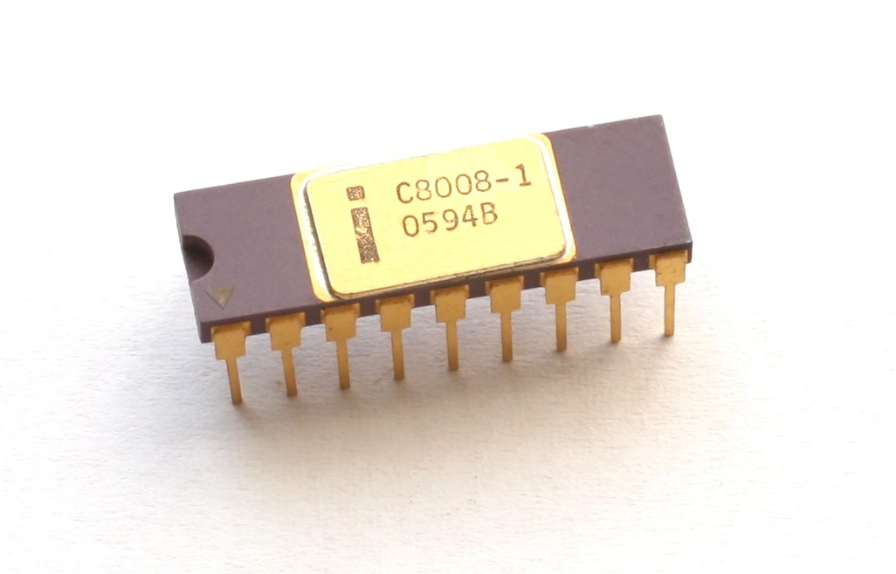
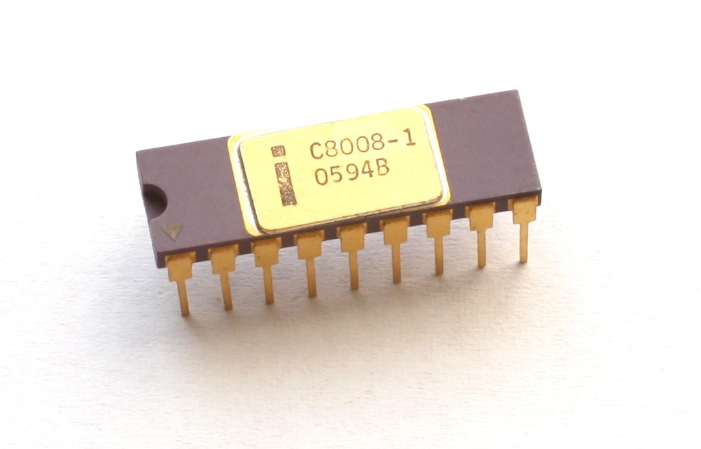
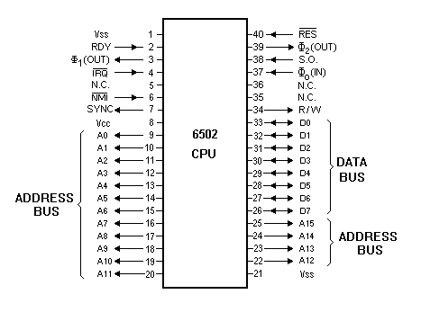

Computer
How does it work?
from microcomputer to microcontroller
Maciej Małecki, Capgemini IoT Community, Wrocław 2021.
Motivation
→

- © Maciej Małecki
- © Maciej Małecki
is this presentation
for me?
"microcomputer" ???

- https://commons.wikimedia.org/wiki/File:IBM_System360_Mainframe.jpg
- By Daderot - Own work, CC0, https://commons.wikimedia.org/w/index.php?curid=42413452
- By Tim Colegrove - Own work, CC BY-SA 4.0, https://commons.wikimedia.org/w/index.php?curid=79216985
{kind=link}
Altair 8800
MITS, 1975

- By Swtpc6800 en:User:Swtpc6800 Michael Holley - Transfered from en.wikipedia, Public Domain, https://commons.wikimedia.org/w/index.php?curid=3185062
- https://www.tempton.de/next-level/blog/bill-gates-der-moment-wenn-microsoft-die-kleinste-sorge-ist
https://s2js.com/altair/sim.html
Altair BASIC

By User:Swtpc6800 Swtpc6800 Michael Holley - Own work, Public Domain, https://commons.wikimedia.org/w/index.php?curid=2649301
Architecture of computers
By MHKII - Own work, CC BY-SA 4.0, Link
Harvard
von Neumann
microprocessor
early Intel
 


- By Original uploader was LucaDetomi at it.wikipedia - Transfered from it.wikipedia, CC BY-SA 3.0, Link
- By Konstantin Lanzet - CPU Collection Konstantin LanzetCamera: Canon EOS 400D, CC BY-SA 4.0, Link
- By Konstantin Lanzet - CPU collectionCamera: Canon EOS 400D, CC BY-SA 3.0, Link
Intel 8008 Architecture
By Appaloosa - Own work, CC BY-SA 3.0, Link
Intel 8088/8086 Architecture
Cheap microprocessors: 6502, Z80
Beyond microcontrollers

Microcontroller vs microprocessor

https://projectiot123.com/2019/10/24/atmega328-pinout-for-arduino/
KIM-1
MOS Technology, Inc., 1976
Apple
1976

By Achim Baqué - https://www.apple1registry.com/en/press.html, CC BY-SA 4.0, Link
8bits, 16bits, 64bits
Data bus width


MOS 6502 (Apple ][ )
8-bits externally/internally
Intel 8088
16-bits internally/8-bit data bus
How to write to RAM?
How to read from RAM?
Stack
based on MOS 6502
PHA- push accumulator (A)PLA- pull accumulator (A)PHP- push status (S)PLP- pull status (S)JSR- jump to subroutineRET- return from subroutineRTI- return from interrupt
IO handling
- Motorola style vs Intel style
- IO ports
- Pull up registers
ALU
Machine code
169 0 141 32 208 169 1 141 32 208 76 0 192
Syntax & Semantic
169 0 141 32 208 169 1 141 32 208 76 0 192
$A9 $00 $8D $20 $D0 $A9 $01 $8D $20 $D0 $4C $00 $C0
$C000 LDA #$00 $C002 STA $D020 $C005 LDA #$01 $C007 STA $D020 $C00A JMP $C000
loop: LDA #$00
STA $D020
LDA #$01
STA $D020
JMP loop
Instruction set (MOS 6502)
ADC Add Memory to Accumulator with Carry LDA Load Accumulator with Memory
AND "AND" Memory with Accumulator LDX Load Index X with Memory
ASL Shift Left One Bit (Memory or Accumulator) LDY Load Index Y with Memory
LSR Shift Right One Bit (Memory or Accumulator)
BCC Branch on Carry Clear
BCS Branch on Carry Set NOP No Operation
BEQ Branch on Result Zero
BIT Test Bits in Memory with Accumulator ORA "OR" Memory with Accumulator
BMI Branch on Result Minus
BNE Branch on Result not Zero PHA Push Accumulator on Stack
BPL Branch on Result Plus PHP Push Processor Status on Stack
BRK Force Break PLA Pull Accumulator from Stack
BVC Branch on Overflow Clear PLP Pull Processor Status from Stack
BVS Branch on Overflow Set
ROL Rotate One Bit Left (Memory or Accumulator)
CLC Clear Carry Flag ROR Rotate One Bit Right (Memory or Accumulator)
CLD Clear Decimal Mode RTI Return from Interrupt
CLI Clear interrupt Disable Bit RTS Return from Subroutine
CLV Clear Overflow Flag
CMP Compare Memory and Accumulator SBC Subtract Memory from Accumulator with Borrow
CPX Compare Memory and Index X SEC Set Carry Flag
CPY Compare Memory and Index Y SED Set Decimal Mode
SEI Set Interrupt Disable Status
DEC Decrement Memory by One STA Store Accumulator in Memory
DEX Decrement Index X by One STX Store Index X in Memory
DEY Decrement Index Y by One STY Store Index Y in Memory
INC Increment Memory by One TAX Transfer Accumulator to Index X
INX Increment Index X by One TAY Transfer Accumulator to Index Y
INY Increment Index Y by One TSX Transfer Stack Pointer to Index X
TXA Transfer Index X to Accumulator
JMP Jump to New Location TXS Transfer Index X to Stack Pointer
JSR Jump to New Location Saving Return Address TYA Transfer Index Y to Accumulator
AVR instruction set
Arithmetic ADD Rd, Rr ADC Rd, Rr ADIW Rp+1:Rp, K6 SUB Rd, Rr SUBI Rdh, K8 SBC Rd, Rr SBCI Rdh, K8 SBIW Rp+1:Rp, K6 INC Rd DEC Rd AND Rd, Rr ANDI Rdh, K8 OR Rd, Rr ORI Rdh, K8 COM Rd NEG Rd CP Rd, Rr CPC Rd, Rr CPI Rdh, K8 SWAP Rd LSR Rd ROR Rd ASR Rd MUL Rd, Rr MULS Rdh, Rrh MULSU Rdq, Rrq FMUL Rdq, Rrq FMULS Rdq, Rrq FMULSU Rdq, Rrq
Bit and others BSET s BCLR s SBI IO5, b CBI IO5, b BST Rd, b BLD Rd, b NOP BREAK SLEEP WDR
Transfer MOV Rd, Rr MOVW Rd+1:Rd, Rr+1:Rr IN Rd, IO6 OUT IO6, Rr PUSH Rr POP Rr LDI Rdh, K8 LDS Rd, D16 LD Rd, X LDD Rd, YZ+K6 LD Rd, -XYZ LD Rd, XYZ+ STS D16, Rr ST X, Rr STD YZ+K6, Rr ST -XYZ, Rr ST XYZ+, Rr LPM LPM Rd, Z LPM Rd, Z+ ELPM ELPM Rd, Z ELPM Rd, Z+ SPM
Jump RJMP S12 IJMP EIJMP JMP P22
Branch CPSE Rd, Rr SBRC Rr, b SBRS Rr, b SBIC IO5, b SBIS IO5, b BRBC s, S7 BRBS s, S7
Call RCALL S12 ICALL EICALL CALL P22 RET RETI
Addressing modes (6502)
LDA #$20- immediateLDA $20- absolute zero pageLDA $D020- absoluteLDA $C000, X,LDA $C000, Y- absolute indexedJMP ($C000)- indirectLDA ($20,X)- indirect zero page preindexed XLDA ($20),Y- indirect zere page postindexed Y
Interrupts

Interrupt sources of Commodore 64 (1982)
Sources
QA, QR code